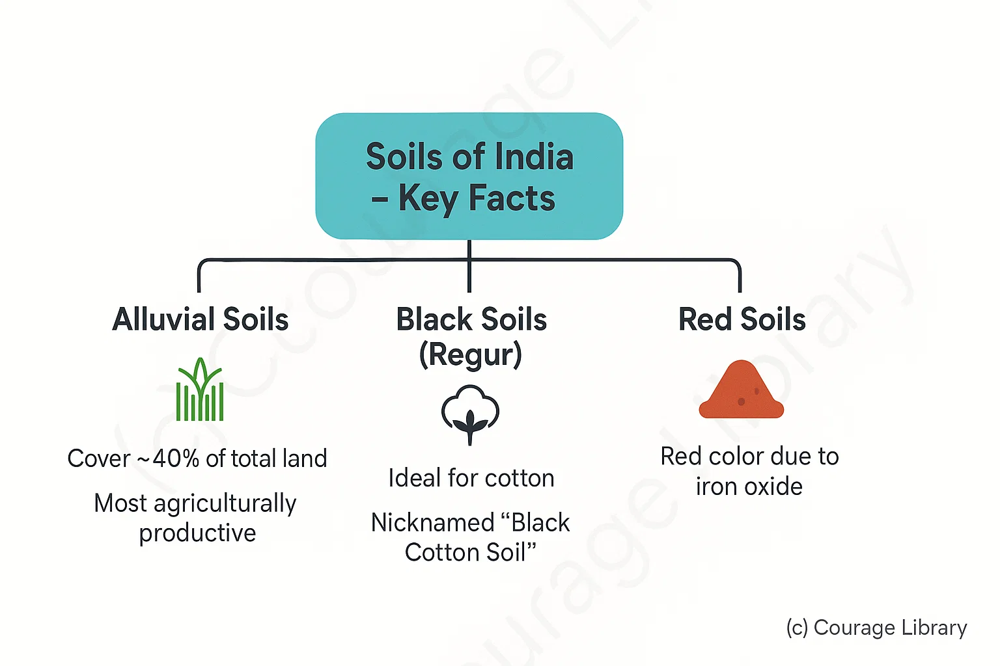

SSC CGL - Detailed Guide 2025
Self-Paced Course
Soils of India
Reference: Lucent GK, NCERT Class 6–12
Soils Types in India
Soils in India are broadly classified into 6 major types by the Indian Council of Agricultural Research (ICAR).
| Soil Type | Origin / Formation | Distribution | Characteristics | Major Crops Grown |
|---|---|---|---|---|
| Alluvial Soil | River deposition (Indo-Gangetic plains) | Northern Plains, Gujarat, coastal deltas | Fertile, rich in potash & lime; Poor in nitrogen; sandy to clayey | Rice, Wheat, Sugarcane, Pulses |
| Black Soil | Weathered basalt (volcanic origin) | Deccan Plateau – Maharashtra, MP, Gujarat | High clay content; retains moisture; rich in lime & iron | Cotton (also called Regur soil), Sorghum |
| Red Soil | Weathered igneous/metamorphic rocks | Tamil Nadu, Karnataka, Chhattisgarh, Odisha | Low fertility; rich in iron, poor in nitrogen, phosphorus | Millets, Groundnut, Potato |
| Laterite Soil | Leaching in wet & hot climate | Kerala, Karnataka, WB hills, NE India | Acidic, low fertility; poor in humus | Tea, Coffee, Cashew, Rubber |
| Desert Soil | Arid climate and sand accumulation | Rajasthan, Gujarat | Sandy, low moisture retention, poor organic matter | Millets, Barley (with irrigation) |
| Mountain Soil | Mechanical weathering by snow, rain | Himalayan states (Sikkim, HP, J&K) | Varied fertility; acidic; rich in humus in forested areas | Tea, Barley, Apple (in valleys) |
Notes:
- Alluvial soils cover ~40% of total land – most agriculturally productive.
- Black soils are ideal for cotton – hence known as "Black Cotton Soil."
- Red soils appear red due to iron oxide.

Soil Erosion in India
Soil erosion refers to the removal of the top fertile layer of soil by natural forces such as wind and water.
Causes of Soil Erosion
| Natural Causes | Human-Induced Causes |
|---|---|
| Heavy rainfall & runoff | Deforestation, Overgrazing |
| Wind (in arid areas) | Unscientific agriculture |
| Steep slopes in hills | Mining, Shifting cultivation (Jhum) |
Severe erosion observed in:
- Shivalik Hills (Himalayas)
- Chambal Valley (Ravines)
- Rajasthan (Wind erosion)
Soil Conservation Techniques
| Method | Description |
|---|---|
| Contour Ploughing | Ploughing along the contour lines to reduce runoff on slopes |
| Terrace Farming | Creating step-like fields on hills to control erosion |
| Strip Cropping | Growing alternate strips of erosion-prone & erosion-resistant crops |
| Afforestation | Planting trees to bind soil with roots |
| Gully Plugging | Filling gullies with vegetation or stones to stop deep erosion |
| Wind Breaks/Shelter Belts | Planting trees in rows to reduce wind velocity in arid areas |
| Controlled Grazing | Rotational grazing to allow vegetation regeneration |
| Regulated Use of Fertilizers | Prevents chemical degradation and ensures soil health |
National Efforts:
- Integrated Watershed Management Programme (IWMP)
- Soil Health Card Scheme (SHC)
- MGNREGA schemes also contribute to erosion control via water conservation
Developed By Roopasree Challa
Next
Start Your SSC CGL Journey Now!
Join Courage Library to experience disciplined study and expert support.
Be a Couragian!